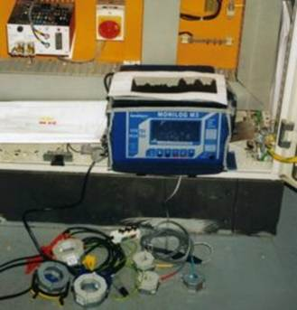

Energy Auditing
and
Energy Management Services
Energy Innovation Ltd. are the first choice for industry when it comes to Energy Auditing and Energy Management services.
Energy Innovation Ltd, are specialists in all aspects of industrial energy usage including the cost-effective performance of Energy audits.
We perform energy audits to a customer’s specification
.
The audit and survey is based on energy bills, metered consumptions, and on-site monitoring using the latest data-logging technology.

The following is a typical scope of work for an energy audit.
The scope is based on the recommended brief for a comprehensive energy audit and survey,
CIBSE AM5 1991 - Energy Audits and Surveys.
CONTACT US for further details or for a competitive quotation.
ENERGY AUDIT - TYPICAL SCOPE OF WORK
1.0 INTRODUCTION
A description of the site from an energy perspective, including it’s functions and services.
2.0 EXECUTIVE SUMMARY OF SURVEY AND RECOMMENDATIONS
A brief summary of the report outlining potential energy savings identified by the audit and survey.
3.0 OBJECTIVES OF AUDIT AND SURVEY
Provide an audit of site energy usage.
Identify areas of potential energy cost savings
Provide an estimate of potential annual energy savings with order of magnitude costing (OMC) and payback analysis.
Identify how methods of energy management should be developed to achieve, maintain and recognise further potential savings.
4.0 ENERGY AUDIT REPORT
4.1 Site Information
Summary of information pertaining to energy use on the site.
4.2 Energy Audit
Audit and analysis of information obtained from energy and fuel bills, metered consumptions, logged data, observations and calculations. The following shall be produced for the final report;
A table summarising all energy intakes to the site
A table listing the current cost of all energy sources on site expressed in SI units.
A table showing the percentage changes in energy costs over the previous three years.
A comparison of the complied energy usage data with comparable industry performance indicators.
4.3 Energy Use Survey
A comprehensive survey of energy used on site will be carried out under the following headings;
4.3.1 Electrical power and lighting.
Maximum demand profile analysis – 7 day
Supply tariff analysis, and recommendations optimising operations to make maximum benefit of the tariff.
Power factor analysis
Assessment of motor drives and potential for installation of VSD’s or soft starts.
Assessment of type, condition, siting and switching arrangement of existing lighting and possible replacement with high efficiency lamps.
Assessment of unnecessary use of lighting and power equipment with particular attention to electric heating equipment.
4.3.2 Thermal Energy
Site steam load analysis.
Site steam distribution system assessment.
Pipework and insulation assessment.
Steam trap condition assessment.
Boiler plant assessment.
Control systems assessment.
Waste heat recovery analysis.
4.3.3 Air conditioning and ventilation
Analysis of heating and cooling loads
HVAC control system assessment
Ductwork assessment
Analysis of the performance and loading of HVAC chillers and compressors.
HVAC piping insulation assessment.
Analysis of the potential for waste heat recovery.
4.3.4 Space heating and hot water
Assessment of heating systems installed.
Assessment of heating controls, including recommendation on upgrades where appropriate.
Assessment of pipework and insulation
4.3.5 Compressed air
Analysis of plant compressed air demand
Evaluation of duty factor for plant air compressors.
Assessment of air compressors condition including intake efficiency.
Assessment of control systems
Assessment of compressed air piping and leakage.
Evaluation of opportunities for waste heat recovery.
4.3.6 Process Refrigeration plant
Analysis of plant cooling demand and compilation of a list of all refrigeration plant on site.
Assessment of energy consumption of the plant, including patterns of use
Assessment of installed plant including age and condition
Assessment of possible required future plant replacement due to phase out of CFC and HCFC gasses. Recommendations on energy efficiency for new plant where appropriate.
Assessment of control systems.
Investigation of opportunities for heat recovery, including absorption refrigeration using waste heat as an energy source.